There are a number of applications in mathematics and physics for which the real number are insufficient. An extended one of these will be considered later in this chapter. From an aesthetic point of view alone, it is convenient to be able to talk about solutions to equations such as x2 = -4 in much the same way as equations such as x2 = 4. After all, there is not, at first glance, much difference between the two, except that the solution to the former, whatever it is, it is not a real number, because the square of a real number can only be positive. To answer this and other more important needs, we define the complex numbers:
A Complex number has the form a + bi where a and b are Real numbers and i2 = -1. The number "a" is called the real part, and the number "b" is the imaginary part.
In pictorial form, a complex number can be thought of as being a point in the complex plane. This is defined by two axes, much like a two dimensional real plane, except that only the horizontal axis has real numbers. The vertical or imaginary axis is marked in units of i (the square root of negative one). Points in the plane can be though of as ordered pairs (a, b), but are normally written in the notation above as a + bi.
The complex number zero is defined to be the one that represents the origin in the above diagram, that is a complex number is zero if and only if both its real part and its imaginary part are zero (0 + 0i).
Addition and subtraction of complex numbers is performed in the same way as it is for vectors (see Chapter 7) where the components are added. Thus, in order to add two complex numbers, one just adds the real parts and we add the imaginary parts. That is,
(a + bi) + (c + di) = (a + c) + (b + d)i
To multiply two complex numbers, one treats them as any other binomial expressions and multiplies each term of the first by each term of the second:
(a + bi) * (c + di) = a * (c + di) + bi * (c + di) = (ac - bd) + (ad + bc)i
The reciprocal of a pure imaginary complex number (one with zero real part) is found by multiplying the numerator and denominator by i. Thus:
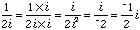
For other divisions, one multiplies numerator and denominator by the complex conjugate of the denominator. This results in a real denominator and a complex number in the proper form.
The complex conjugate of a complex number a + bi is the number a - bi.
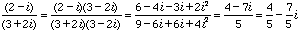
In the introductory Calculus course it is shown that certain transcendental functions of real numbers can be expanded (so as to be approximated) as power series in the following way:
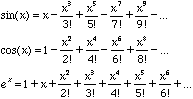
If one replaces x with ix in the latter series, it can readily be seen that:
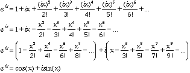
This last equation is known as Euler's Formula. From it, one also has that
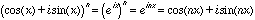
so that it is also possible to write:
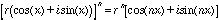
These formulas provide a means of taking powers and roots of complex numbers readily. First observe that, if in figure 17.1, the distance from the origin to the point representing the complex number is denoted as r and the angle that a ray through the origin and this point makes with the positive real axis is denoted t, then as for vectors, one can write:
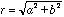 and 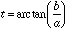
Thus, if , for instance z = (1 - i)4 were expressed using these two relations as
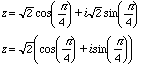
then one could write
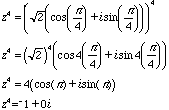
and this works for fractional exponents as well, allowing one to take various roots, so that, for instance, the sixth root of one can be written as
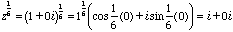
and since the angle 0 is coterminal with the angles 2¼, 4¼, 6¼, 8¼, and 10¼ there are also roots at
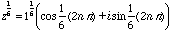
for each of these, yielding
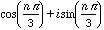for n = 1,2,3,4, and 5.
At n = 6 the results begin to repeat. After all, there can only be six sixth roots of a number. These roots are therefore :
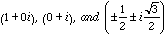
This discussion of power and root finding has been undertaken mainly as illustration. However, the underlying principles will be returned to later in the chapter.
There are a variety of approaches to implementing complex numbers in non ISO standard versions of Modula-2. One could do so transparently:
DEFINITION MODULE ComplexNumbers; (* by R. Sutcliffe last modified 1996 10 30 *) TYPE Parts = (re, im); Complex = ARRAY Parts OF REAL; PROCEDURE Cmplx (real, imag : REAL) : Complex; (* constructs a complex from an ordered pair *) PROCEDURE Re (num : Complex) : REAL; (* returns the real part of a complex number *) PROCEDURE Im (num : Complex) : REAL; (* returns the imaginary part of a complex number *) PROCEDURE Add (first, second : Complex) : Complex; PROCEDURE Subtract (first, second : Complex) : Complex; PROCEDURE Multiply (first, second : Complex) : Complex; PROCEDURE Divide (first, second : Complex) : Complex; END ComplexNumbers.
Alternately, one could use a record with two fields called re and im, and otherwise the same arithmetic operations.
The implementation module for this data type as defined above is fairly straightforward, and most of it is shown below:
IMPLEMENTATION MODULE ComplexNumbers; (* by R. Sutcliffe last modified 1996 10 30 *) PROCEDURE Cmplx (real, imag : REAL) : Complex; (* constructs a complex from an ordered pair *) VAR temp : Complex; BEGIN temp [re] := real; temp [im] := imag; RETURN temp; END Cmplx; PROCEDURE Re (num : Complex) : REAL; (* returns the real part of a complex number *) BEGIN RETURN num[re]; END Re; PROCEDURE Im (num : Complex) : REAL; (* returns the imaginary part of a complex number *) BEGIN RETURN num[im]; END Im; PROCEDURE Add (first, second : Complex) : Complex; VAR temp : Complex; BEGIN temp [re] := first [re] + second [re]; temp [im] := first [im] + second [im]; RETURN temp; END Add; PROCEDURE Subtract (first, second : Complex) : Complex; VAR temp : Complex; BEGIN temp [re] := first [re] - second [re]; temp [im] := first [im] - second [im]; RETURN temp; END Subtract; PROCEDURE Multiply (first, second : Complex) : Complex; VAR temp : Complex; BEGIN temp [re] := first [re] * second [re] - first [im] * second [im]; temp [im] := first [re] * second [im] + first [im] * second [re]; RETURN temp; END Multiply; PROCEDURE Divide (first, second : Complex) : Complex; VAR temp : Complex; BEGIN (* left as an exercise *) END Divide; END ComplexNumbers.
There are other things that would still have to be taken care of, such as I/O and various mathematical operations, but these could be done in other library modules. In addition, it might be desirable to have a separate ADT called LongComplex whose parts were LONGREAL.
For minimal testing purposes at this juncture, it is worth while to include a small application program that makes use of the data type Complex. It incidentally addresses the issue of writing complex numbers.
MODULE TestComplex;
(* by R. Sutcliffe
to test transparent implementation of complex numbers
modified 1996 10 30 *)
FROM ComplexNumbers IMPORT
Complex, Add, Multiply, Cmplx, Re, Im;
FROM STextIO IMPORT
WriteChar, WriteLn, WriteString;
FROM SRealIO IMPORT
WriteReal;
VAR
number1, number2, number3 : Complex;
PROCEDURE WriteComplex (number : Complex; flen : CARDINAL);
(* Of the space provided in flen, four places are needed to write the + between the two reals, and one to write the letter i. The rest is divided equally between the two reals. *)
VAR
realFlen : CARDINAL;
BEGIN
IF flen < 4
THEN
realFlen := 0;
ELSE
realFlen := (flen - 4) DIV 2;
END;
WriteReal (Re(number), realFlen);
WriteString (" + ");
WriteReal (Im(number), realFlen);
WriteChar ('i');
END WriteComplex;
BEGIN
(* Initialize complex numbers *)
number1 := Cmplx (4.0, 16.0);
number2 := Cmplx (-13.0, 2.0);
number3 := Add(number1, number2);
WriteString ("The sum is ");
WriteComplex (number3, 20);
WriteLn;
number3 := Multiply (number1, number2);
WriteString ("The product is ");
WriteComplex (number3, 20);
WriteLn;
END TestComplex.
The output from this program, as expected was:
The sum is -9.00000 + 18.00000i The product is -84.0000 + -200.000i
Notice that the client program "knows" the names of the parts of the type Complex. This fact has not actually been used because the procedures Cmplx, Re, and Im were used to construct and find the parts of a complex number, but it could have been. As indicated in earlier chapters, it is a better idea to keep such details hidden, so that the client program does not have access to such information, but rather the data can be operated upon only by the procedures which are also contained in the module along with the data type definition. There have been several instances of such opaque types throughout the text. However, as noted in section 12.8 and illustrated with the module points in that chapter, one cannot have a procedure allocate memory for a temporary opaque variable and then return it because every call to such a procedure would use a little more memory unnecessarily, and one cannot deallocate the memory before returning either because then the memory pointed to after the return is no part of a valid allocation. The real problem is that in writing
number3 := Add(number1, number2);
with opaque variables, access to the memory pointed to by number3 before the assignment is simply lost. This is a consequence of the fact that opaque types are in fact pointers.
Thus, an implementation of complex numbers in classic Modula-2 requires that one use variable parameters in regular procedures rather than function procedures returning an item of the opaque type. Moreover, procedures are needed to initialize and destroy complex entities. We could have:
DEFINITION MODULE ComplexNumbersO;
(* by R. Sutcliffe
last modified 1996 10 30 *)
TYPE
Complex; (* no details here *)
PROCEDURE Init (VAR complexToInit : Complex);
(* Must be called to create a Complex number. The number created will
have both real and imaginary parts zeroed. *)
PROCEDURE Destroy (VAR complexToDestroy : Complex);
(* Call to give back the memory allocated to a Complex number *)
PROCEDURE Cmplx (real, imag : REAL; VAR result : Complex);
(* Takes two reals as the parts and assigns them to the complex. *)
PROCEDURE Re (cNumber : Complex) : REAL;
(* Returns the real part of the given complex number. *)
PROCEDURE Im (cNumber : Complex) : REAL;
(* Returns the imaginary part of the given complex number. *)
PROCEDURE Negate (originalNum: Complex; VAR result : Complex);
(* Returns the opposite of the complex number. *)
PROCEDURE Add (firstNum, secondNum : Complex; VAR result : Complex);
(* Returns the sum of the two complex numbers. *)
PROCEDURE Subtract (firstNum, secondNum : Complex; VAR result : Complex);
(* Returns the difference of the two complex numbers. *)
PROCEDURE Multiply (firstNum, secondNum : Complex; VAR result : Complex);
(* Returns the product of the two complex numbers. *)
PROCEDURE Divide (firstNum, secondNum : Complex; VAR result : Complex);
(* Returns the quotient of the two complex numbers. *)
END ComplexNumbersO.
One must still decide whether to implement the type as an array or a record. A record style implementation is given below.
IMPLEMENTATION MODULE ComplexNumbersO;
(* by R. Sutcliffe
last modified 1996 10 30 *)
FROM Storage IMPORT
ALLOCATE, DEALLOCATE;
TYPE
Complex = POINTER TO ComplexData; (* opaque, so must be a pointer *)
ComplexData = (* now here is its structure *)
RECORD
re : REAL;
im : REAL;
END (* record *);
PROCEDURE Init (VAR complexToInit : Complex);
BEGIN
NEW (complexToInit); (* get memory dynamically *)
complexToInit^.re := 0.0; (* and zero it off *)
complexToInit^.im := 0.0;
END Init;
PROCEDURE Cmplx (re, im : REAL; VAR complexToAssign: Complex);
BEGIN
complexToAssign^.re := re;
complexToAssign^.im := im;
END Cmplx;
PROCEDURE Re (cNumber : Complex) : REAL;
BEGIN
RETURN cNumber^.re;
END Re;
PROCEDURE Im ( cNumber : Complex) : REAL;
BEGIN
RETURN cNumber^.im;
END Im;
PROCEDURE Negate (originalNum: Complex; VAR result : Complex);
BEGIN
result^.re := -originalNum^.re;
result^.im := -originalNum^.im;
END Negate;
PROCEDURE Add (firstNum, secondNum : Complex; VAR result : Complex);
BEGIN
result^.re := firstNum^.re + secondNum^.re;
result^.im := firstNum^.im + secondNum^.im;
END Add;
PROCEDURE Subtract (firstNum, secondNum : Complex; VAR result : Complex);
BEGIN
result^.re := firstNum^.re - secondNum^.re;
result^.im := firstNum^.im - secondNum^.im;
END Subtract;
PROCEDURE Multiply (firstNum, secondNum : Complex; VAR result : Complex);
BEGIN
result^.re := firstNum^.re * secondNum^.re - firstNum^.im * secondNum^.im;
result^.im := firstNum^.re * secondNum^.im + firstNum^.im * secondNum^.re;
END Multiply;
PROCEDURE Divide (firstNum, secondNum : Complex; VAR result : Complex);
BEGIN
result^.re :=
(firstNum^.re*secondNum^.re + firstNum^.im*secondNum^.im)/
(secondNum^.re*secondNum^.re + secondNum^.im*secondNum^.im);
result^.im :=
(firstNum^.im*secondNum^.re + firstNum^.re*secondNum^.im)/
(secondNum^.re*secondNum^.re + secondNum^.im*secondNum^.im);
END Divide;
PROCEDURE Destroy (VAR complexToDestroy : Complex);
BEGIN
DISPOSE (complexToDestroy);
END Destroy;
END ComplexNumbersO.
As usual, the implementation could be changed without affecting the definition in any way. Now, consider how the client program must be written with the new regular procedure syntax for the calls:
MODULE TestComplexO;
(* by R. Sutcliffe
last modified 1996 10 30 *)
FROM ComplexNumbersO IMPORT
Complex, Init, Cmplx, Re, Im, Add, Multiply;
FROM STextIO IMPORT
WriteLn, WriteString, WriteChar;
FROM SRealIO IMPORT
WriteReal;
VAR
number1, number2, number3 : Complex;
PROCEDURE WriteComplex (number : Complex; flen : CARDINAL);
(* Of the space provided in flen, four places are needed to write the + between the two reals, and one to write the letter i. The rest is divided equally between the two reals. *)
VAR
realFlen : CARDINAL;
BEGIN
IF flen < 4
THEN
realFlen := 0;
ELSE
realFlen := (flen - 4) DIV 2;
END;
WriteReal (Re(number), realFlen);
WriteString (" + ");
WriteReal (Im(number), realFlen);
WriteChar ('i');
END WriteComplex;
BEGIN (* ClientProgram *)
(* Create the complex numbers *)
Init (number1);
Init (number2);
Init (number3);
(* Initialize the complex numbers number1 and number2 *)
Cmplx (4.0, 16.0, number1);
Cmplx (-13.0, 2.0, number2);
(* the last part is the same as before. *)
Add (number1, number2, number3);
WriteString ("The sum is ");
WriteComplex (number3, 20);
WriteLn;
Multiply (number1, number2, number3);
WriteString ("The product is ");
WriteComplex (number3, 20);
WriteLn;
END TestComplexO.
Having to use such syntax for the manipulation of a numeric type is a nuisance. One does not expect any numeric type to have to be initialized or to be added using three parameter regular procedures. However, if all one has is classical Modula-2 the only choice is to implement transparently or to live with the extra apparatus required by an opaque implementation.
If it is necessary to go further and define arithmetic and mathematical operations on the type complex, that can be done in a separate module. For details on what such a module should contain, see the next section.